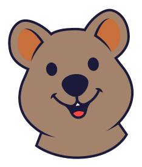

Taller KWOKI
Aquí va a estar el taller de la familia KWOKI: los pedidos, las impresiones y las cuentas. Todavía lo estamos armando, capa por capa.
Muy pronto
Mientras tanto, los juguetes están en kwokitoys.com.

Aquí va a estar el taller de la familia KWOKI: los pedidos, las impresiones y las cuentas. Todavía lo estamos armando, capa por capa.
Muy pronto
Mientras tanto, los juguetes están en kwokitoys.com.